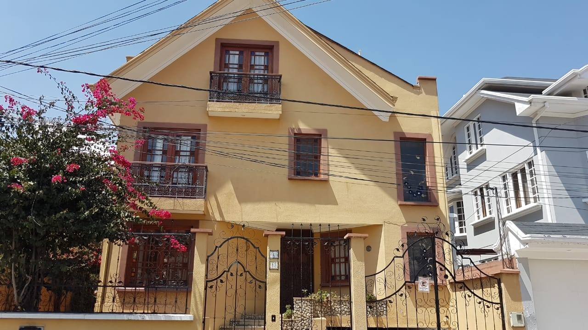
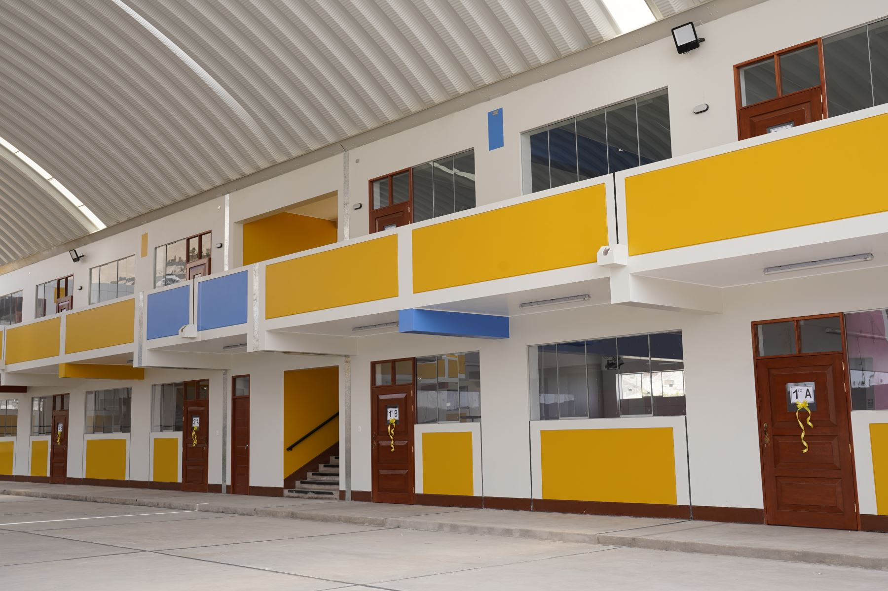
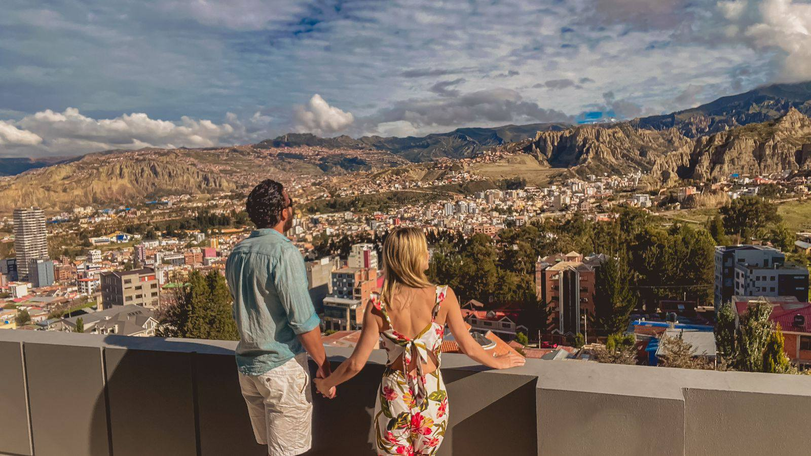

Un amplio terreno de 600 m² ideal para construir tu hogar o desarrollar un proyecto inmobiliario.
Con acceso inmediato a vías principales, colegios, tiendas y todos los servicios básicos.
Disfruta de la tranquilidad, la seguridad y el aire puro que solo Cota Cota puede ofrecerte.
Vista del terreno desde la entrada.
Área lateral con acceso pavimentado.
Zona tranquila con hermosa vista.
Terreno nivelado y listo para construcción.
Entorno natural con plusvalía creciente.
Espacio ideal para jardín o patio amplio.